Computational approaches to the analysis of circular RNAs: bioinformatic tool development and applications in understanding drug-resistant prostate cancer
Introduction · Chapter 1
Overview: computational tools for circRNA analysis, and a ceRNA network informed prognostic signature in prostate cancer
Introduction · Chapter 1
Androgen receptor signalling and resistance to androgen-deprivation therapy in prostate cancer
- Prostate cancer (PCa) is the second most frequently diagnosed cancer in men, driven by androgen receptor (AR) signalling. Primary treatment is surgery; approximately 35% of men experience biochemical recurrence (BCR).
- Recurrence treated with second-generation antiandrogens such as enzalutamide, but 20–40% of patients are intrinsically resistant and all eventually progress to castration-resistant prostate cancer (CRPC).
- Current signatures derived from modelling gene expression alone. Non-coding RNAs, which regulate gene expression, are of growing interest in cancer as biomarkers and therapeutic targets.
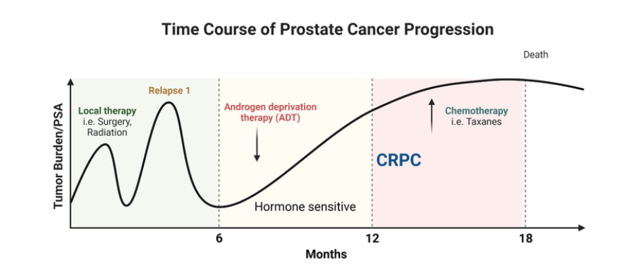
Introduction · Chapters 1–2
Circular RNAs biogenesis and regulators within the competing endogenous RNA network
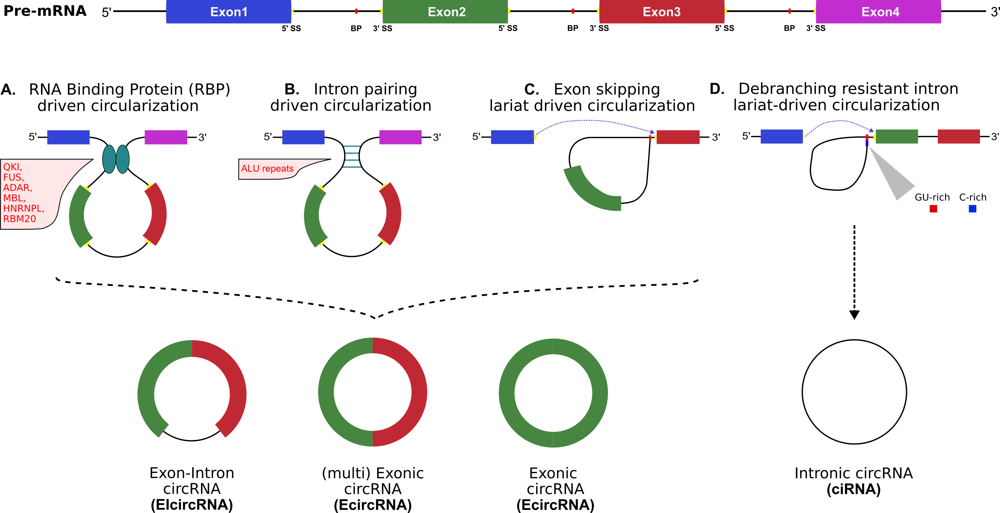
Introduction · Chapters 1–2
Circular RNAs biogenesis and regulators within the competing endogenous RNA network
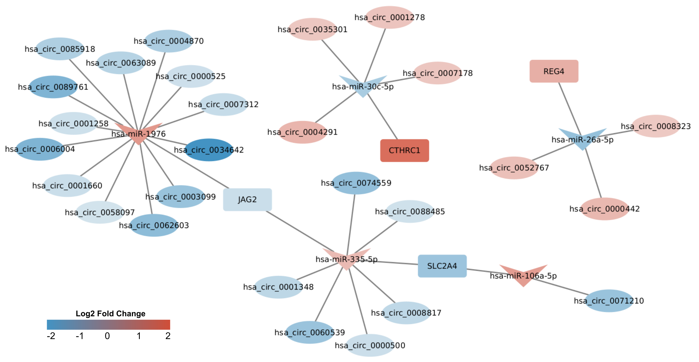
Introduction · Chapter 1
Research questions of the thesis
Review of computational challenges · Chapter 2
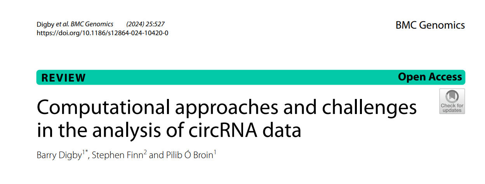
Review of computational challenges · Chapter 2
Benchmarking studies report substantial discordance among circRNA identification tools
Experimental setup
Five circRNA identification tools were run on the same HeLa and Hs68 sequencing libraries, with and without RNase R treatment.
Ground truth
circRNAs called in RNase R− libraries but depleted in RNase R+ libraries were counted as false positives.
Finding
Only 854 of the 5,071 true positive set were called by all five tools; the intersection of all tools had a false-positive rate of 6.56%, at the cost of sensitivity.
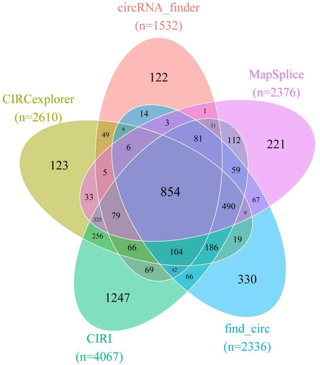
Review of computational challenges · Chapter 2
Benchmarking studies report substantial discordance among circRNA identification tools
Experimental setup
Eleven circRNA identification tools were run on a simulated background dataset of reads generated from linear RefSeq mRNA sequences.
Rationale
The dataset contains no circRNAs - every 'circRNA' called is a false positive.
Finding
False-positive calls ranged from 0 to 1,084 per tool, highlighting the blind-spots inherent in each tool.
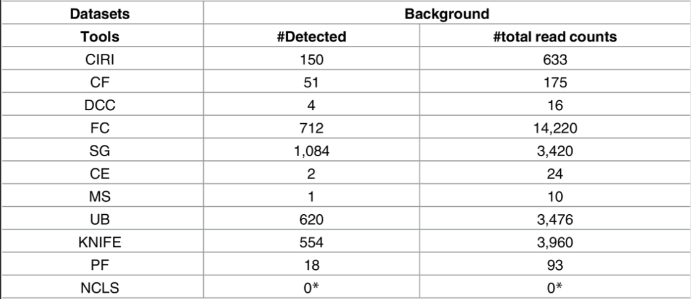
Review of computational challenges · Chapter 2
circRNA databases exhibit high degrees of heterogeneity
Identifiers returned for chr1:27087346-27089776|+ (hg19):
| Arraystar | ASCRP3003018 |
| circAtlas | hsa-ARID1A_0002 |
| circBank | hsa_ARID1A_0003300 |
| circBase | hsa_circ_0006913 |
- Mixed 0- and 1-based coordinates; hg19 and hg38 assemblies.
- Most resources offer single-query web interfaces or bulk downloads only.
Review of computational challenges · Chapter 2
Limitations identified in the review and their treatment in this thesis
nf-core/circrna · Chapter 3
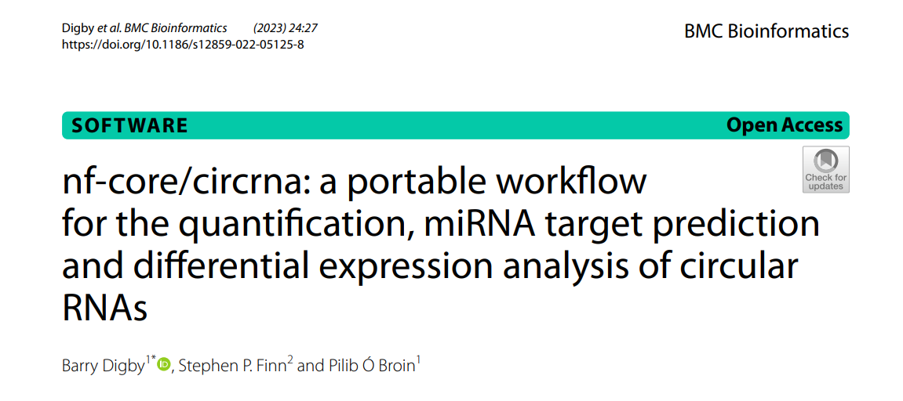
nf-core/circrna · Chapter 3
Workflow architecture: three analysis modules implemented in Nextflow DSL2

nf-core/circrna · Chapter 3
Demonstration: re-analysis of a published C. elegans total RNA-seq dataset (PRJNA742881)

Computational performance
| Resource | Value |
|---|---|
| Wall-clock time | 18 h 21 min |
| CPU hours | 1,566 |
| Allocation (SLURM) | 8 CPUs, 60 GB |
| Peak process memory | ~38 GB |
nf-core/circrna · Chapter 3
Performance of individual tools and of consensus calling on simulated data
nf-core/circrna · Chapter 3
Combinatorial analysis of tool sets and selection of default parameters
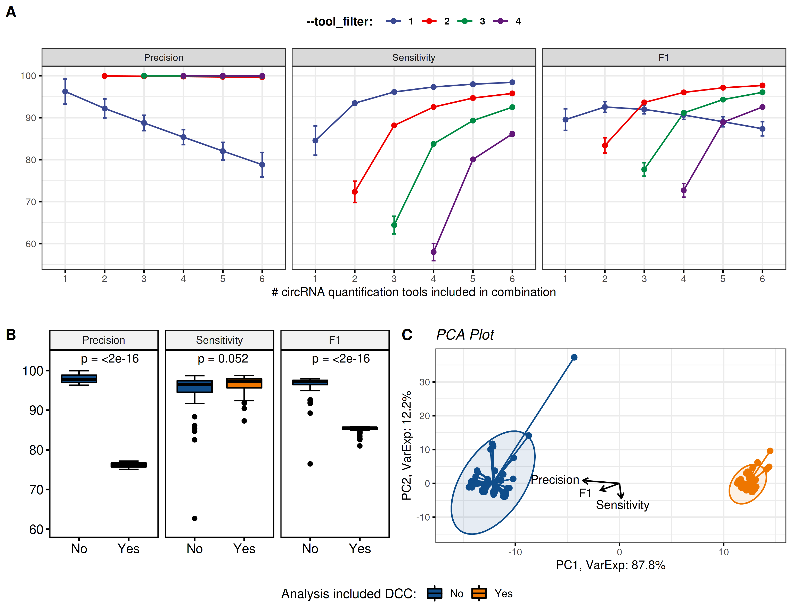
--tool_filter; (B) sets with versus without DCC; (C) PCA of the sets.| Top combinations (filter 2) | P | S | F1 |
|---|---|---|---|
| CIRCexplorer2, CIRIquant, Segemehl | 98.47 | 97.21 | 97.83 |
| CIRIquant, MapSplice, Segemehl | 98.55 | 96.99 | 97.76 |
| CIRCexplorer2, CIRIquant, find_circ | 99.59 | 95.89 | 97.70 |
| CIRCexplorer2, CIRIquant, MapSplice | 99.74 | 95.54 | 97.60 |
| CIRIquant, find_circ, MapSplice | 99.70 | 95.57 | 97.59 |
- F1 inflects at three tools with
--tool_filter 2; further tools add cost with minimal gain, and stricter filtering reduces sensitivity. - Sets containing DCC had significantly lower precision and F1 (P < 2 × 10−16); sensitivity did not differ significantly (P = 0.052).
nf-core/circrna · Chapter 3
Chapter 3: summary of contributions
pycircdb · Chapter 4
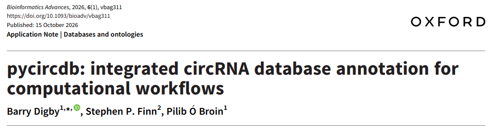
pycircdb · Chapter 4
Workflow architecture: four modules implemented using Apache Hamilton
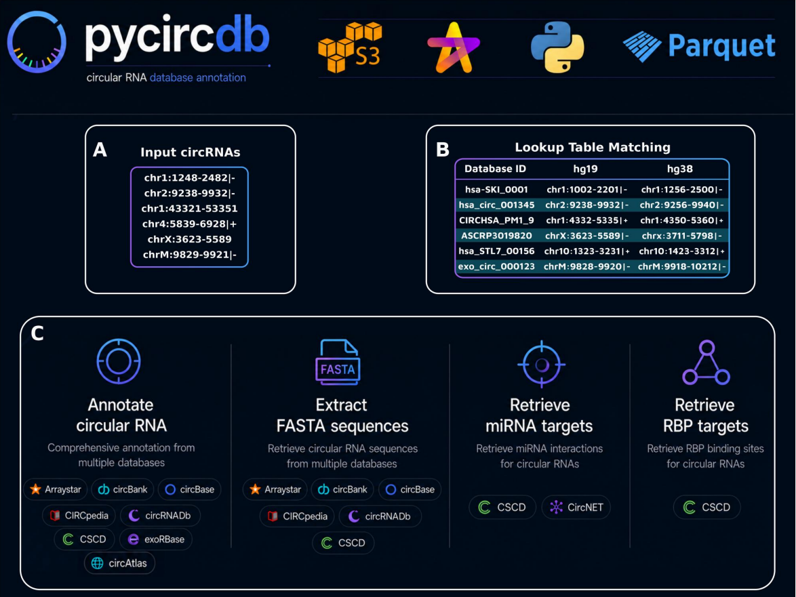
pycircdb · Chapter 4
pycircdb invocation
$ pycircdb -c config.json annotate -d 'circbase' fasta -d 'cscd'
{ "global_parameters": { "max_tasks": 1, "output_dir": "results/", "tmp_dir": "tmp/" }, "samples": { "glioblastoma_plus_dcc": { "file_path": "test/rnase_plus/glioblastoma_RNase_plus_dcc.txt", "reference": "hg38" }, "glioblastoma_plus_ciriquant": { "file_path": "test/rnase_plus/glioblastoma_RNase_plus_ciriquant.txt", "reference": "hg38" } } }
pycircdb · Chapter 4
Tolerant coordinate matching for inputs from heterogeneous quantification tools
| Example input | Example match (hg19 lookup) | Matching mode |
|---|---|---|
chr2:9238-9932|- | chr2:9238-9932|-hsa_circ_001345 | Exact |
chrX:3623-5589 | chrX:3623-5589|-ASCRP3019820 | Strand-ambiguous: strand absent from input, taken from the database entry |
chrM:9829-9921|- | chrM:9828-9921|-exo_circ_000123 | Tolerant coordinate: start −1 bp |
pycircdb · Chapter 4
Validation of identifier retrieval and scaling of runtime and memory
| Input | Time (s) | Peak RAM (GB) | Output (MB) |
|---|---|---|---|
| 100† | 13.7 | 2.3 | 2.6 |
| 1,000† | 16.2 | 2.5 | 23.4 |
| 10,000† | 25.8 | 2.7 | 228.8 |
| 100,000 | 35.0 | 3.1 | 240.5 |
| 200,000 | 52.9 | 3.3 | 469.8 |
| 300,000 | 66.7 | 3.8 | 690.7 |
Benchmark: two glioblastoma samples (SRR5133906, SRR5133907); seven quantification tools (Digby et al., 2023).
pycircdb · Chapter 4
Chapter 4: summary of contributions
ceRNA prognostic signature · Chapter 5
ceRNA prognostic signature · Chapter 5
Study design: ceRNA network-constrained feature selection for prognostic modelling
ceRNA prognostic signature · Chapter 5
Transcriptomic datasets used for network construction
Prostate cancer datasets
| Data type | Series | Contrast | Sample size (tumour/normal) |
|---|---|---|---|
| circRNA | GSE113153 | Gleason high vs low | 10/0 |
| miRNA | GSE21036 | Tumour vs normal | 100/28 |
| miRNA | GSE23022 | Tumour vs normal | 20/20 |
| miRNA | GSE36803 | Tumour vs normal | 21/21 |
| miRNA | GSE45604 | Tumour vs normal | 50/10 |
| miRNA | GSE46738 | Tumour vs normal | 53/4 |
| miRNA | TCGA | Tumour vs normal | 498/52 |
| mRNA | TCGA | Tumour vs normal | 498/52 |
Enzalutamide datasets
| Data type | Series | Contrast | Sample size (n per group) |
|---|---|---|---|
| circRNA | GSE118959 | Clone 1 (high ENZ-res), Clone 9 (mod ENZ-res) vs. control | 3 per group |
| miRNA | GSE312115 | Clone 1 (high ENZ-res), Clone 9 (mod ENZ-res) vs. control | 3 per group |
| mRNA | GSE143408 | Enzalutamide exposure timecourse (21, 14, 7 vs. 0 days) | 3 per timepoint |
| mRNA | GSE78201 | 6 months enzalutamide treated vs. control | 4 per group |
| mRNA | GSE88752 | Enzalutamide treated vs. sensitive | 4 per group |
| mRNA | In-house | Clone 1 (high ENZ-res), Clone 9 (mod ENZ-res) vs. control | 3 per group |
- Clone 1: highly enzalutamide-resistant LNCaP; clone 9: moderately resistant.
- Differential expression with limma; Benjamini–Hochberg adjusted P ≤ 0.05. Features retained when significant in both contrasts with the same direction of change.
ceRNA prognostic signature · Chapter 5
Construction of the circRNA–miRNA–mRNA network
- Differential expression: 232 circRNAs, 42 miRNAs and 1,310 mRNAs with concordant change across contrasts.
- circRNA–miRNA prediction (CircBase, CSCD): 30,727 pairs; all 42 DE-miRNAs retained.
- miRNA–mRNA prediction (TargetScan, miRNet, miRTarBase, miRBase): 61,193 predictions; 1,090 DE-mRNAs retained.
- Inverse-expression (ceRNA) filter: 124 circRNAs, 38 miRNAs and 817 mRNAs.
Network provided as Supplementary_3.csv.
ceRNA prognostic signature · Chapter 5
Prognostic model development
| Dataset | BCR events/total | Series | Platform |
|---|---|---|---|
| Belfast | 56/248 | GSE116918 | GPL25318 |
| CIT | 13/77 | GSE54460 | GPL11154 |
| CMap | 58/200 | GSE94767 | GPL5175 |
| CPC | 36/99 | GSE107299 | GPL16686 |
| DKFZ | 24/105 | EGAS00001002923 | GPL11154 |
| GSE54460 | 40/91 | GSE54460 | GPL11154 |
| Stockholm | 45/92 | GSE70769 | GPL10558 |
| TCGA | 99/463 | TCGA | Illumina HiSeq |
| Taylor | 27/131 | GSE21034 | GPL5188 |
| Derivation dataset (nine cohorts) | 398/1406* | ||
| GSE46602 (validation) | 22/36 | GSE46602 | GPL570 |
- 681 predictors: 679 network mRNAs present in the cohorts, Gleason score and PSA; expression centred and scaled independently.
- CoxBoost with
minstepno= 5 andmaxstepno= 35 to constrain the number of predictors (15–50 events per predictor). - 26 non-zero coefficients; three removed for violating proportional hazards (Schoenfeld residuals): 23 genes.
*Cases with no BCR metadata were removed from the derivation dataset.
ceRNA prognostic signature · Chapter 5
Performance of the 23-gene signature in the derivation dataset
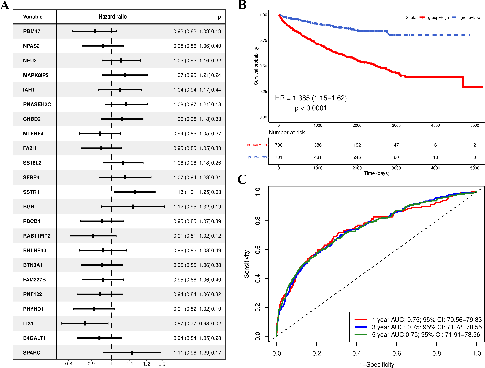
ceRNA prognostic signature · Chapter 5
Bootstrap validation: stability of predictor selection
ceRNA prognostic signature · Chapter 5
Biological context of selected signature genes
| Gene | logFC | HR (95% CI) | Previously reported context | Our finding |
|---|---|---|---|---|
| BTN3A1 | −1.41 | 0.95 (0.85–1.06) | Downregulated in breast and non-small cell lung cancer, where low expression is associated with worse overall survival; positively correlated with tumour-infiltrating immune cells | Concordant |
| SPARC | −0.48 | 1.11 (0.96–1.29) | Higher in patients with metastases and higher Gleason score; downregulation in PCa also reported | Mixed |
| MAPK8IP2 | +2.35 | 1.07 (0.95–1.21) | Upregulated in multiple cancers, associated with BCR and upregulated in CRPC | Concordant |
| LIX1 | −2.48 | 0.87 (0.77–0.98) | Downregulation in PCa and CRPC, associated with poor outcomes | Concordant |
| B4GALT1 | −0.45 | 0.94 (0.84–1.05) | Silenced by AKR1C3/AR-V7 complex in CRPC, suppressing tumour suppressor activity | Concordant |
| SS18L2 | +0.54 | 1.06 (0.96–1.18) | No prior PCa literature; knockdown induces G2/M arrest and apoptosis in breast cancer cells | Novel |
logFC: PCa and enzalutamide-resistant samples; HR from the multivariable Cox model; “Our finding” compares direction of change with the literature.
ceRNA prognostic signature · Chapter 5
External validation in an independent cohort (GSE46602)

| Calibration slope (95% CI) | Harrell’s C | HR, high risk (95% CI) | AUC at 1 / 3 / 5 y | |
|---|---|---|---|---|
| Derivation | 1.59 (1.41–1.77) | 0.73 | 1.38 (1.15–1.62) | 0.75 / 0.75 / 0.75 |
| Validation | 1.33 (0.59–2.06) | 0.71 | 1.48 (0.52–2.44) | 0.67 / 0.78 / 0.87 |
- Calibration slope: regression slope of observed outcome on the prognostic index; 1 = ideal fit.
- Harrell’s C: proportion of comparable patient pairs in which the higher-risk patient has BCR earlier.
*HR = log-hazard ratio (Cox regression coefficient, not exponentiated)
ceRNA prognostic signature · Chapter 5
Between-study heterogeneity
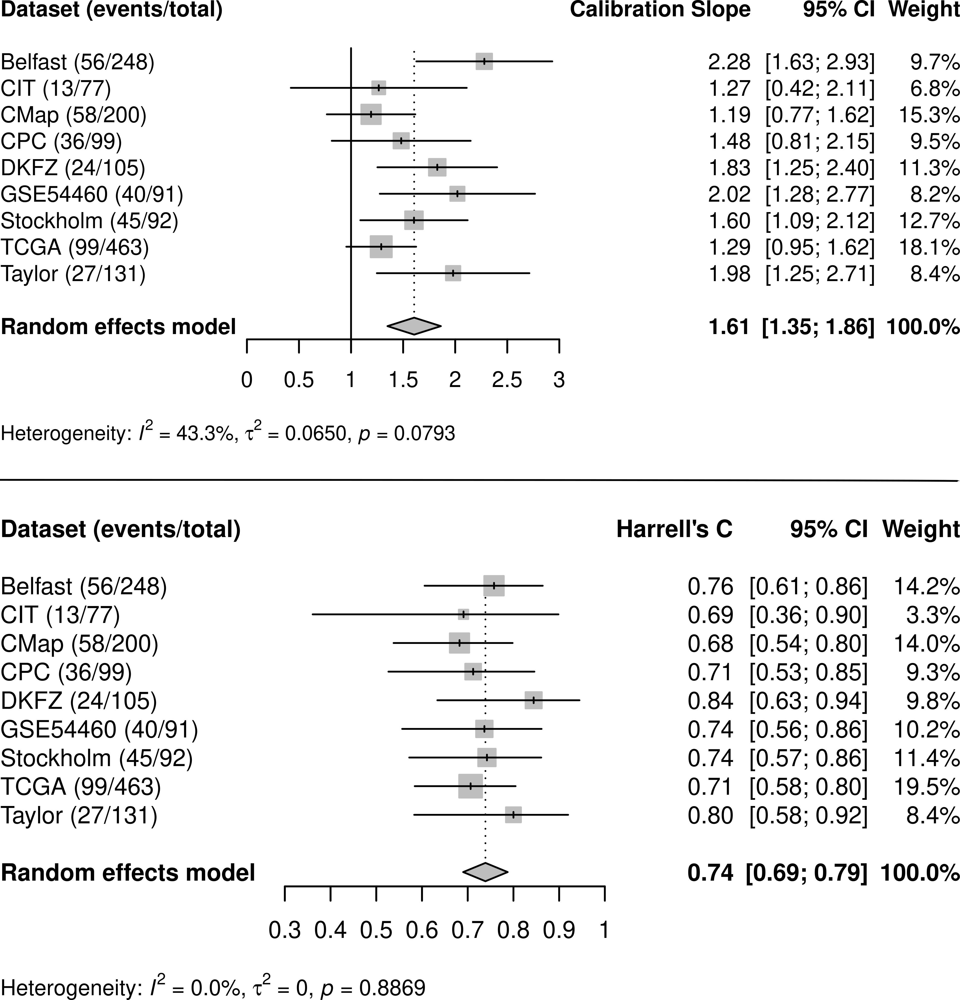
ceRNA prognostic signature · Chapter 5
Comparison with published prognostic signatures in the validation cohort
ceRNA prognostic signature · Chapter 5
Chapter 5: summary of contributions
Discussion · Chapter 6
Summary of contributions
Not on their own. Detection is fragmented across tools and lacks a gold standard; multi-tool consensus is the most effective mitigation. Databases are heterogeneous and require careful integration.
nf-core/circrna integrates seven tools, miRNA prediction and differential expression; three tools with ≥ 2 agreement are near-optimal. pycircdb unifies nine databases for reproducible batch annotation on modest hardware.
A ceRNA-constrained 23-gene signature is associated with five-year biochemical recurrence. Association only: a regulatory role of the network was not tested.
Discussion · Chapter 6
Future directions by work chapter
Chapter 3 · nf-core/circrna
- In active development by members of the nf-core community.
- nf-core/circ-long: a workflow for long-read circRNA analysis.
Chapter 4 · pycircdb
- Include support for additional reference organisms.
- Propose integration in nf-core/circrna, commonly requested feature by users.
Chapter 5 · Modelling
- Investigate incremental value over clinical features PSA, Gleason score.
- Evaluation in patient cohorts treated with enzalutamide, current work constrained to LNCaP cells.
Supplementary · Chapter 3
Evaluation metrics: worked example and design considerations
CIRCexplorer2 (thesis Table 3.3)
Precision = 6,259 / 6,270 = 99.82%
Sensitivity = 6,259 / 7,267 = 86.13%
F1 = 2(0.9982)(0.8613) / (0.9982 + 0.8613) = 92.47%
Calls shared by ≥ 2 tools (--tool_filter 2): precision 99.83%, sensitivity 96.12%, F1 97.94%.
Design considerations
- Strict coordinate definition: a correct call with shifted coordinates counts as a false positive for all tools; rankings are robust, absolute precision conservative.
- Truth set from circRNADb (computational predictions).
- RT template switching, RNase R bias and repeat or paralog mapping artefacts are not simulated.
- One tissue, read length and coverage.
- Tool selection for C. elegans was informed by a human simulation.
Supplementary · Chapter 3
Computational performance of nf-core/circrna on PRJNA742881
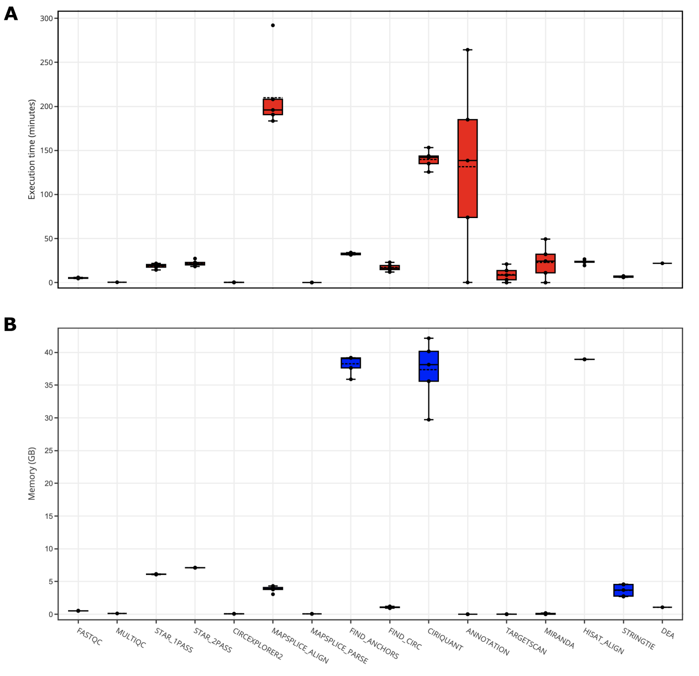
- Most memory-intensive processes: find_circ and CIRIquant alignment (38.26 and 37.37 GB); all others < 10 GB.
- Mean run time of MapSplice and CIRIquant alignment steps: 209 and 139 min.
- The annotation script averaged 131 min and scales with the number of candidates;
--bsj_filterreduces this. - DCC failed with 120 GB of RAM on this dataset (very high coverage).
Supplementary · Chapter 3
Proportion of common candidates between quantification tools (simulated dataset)
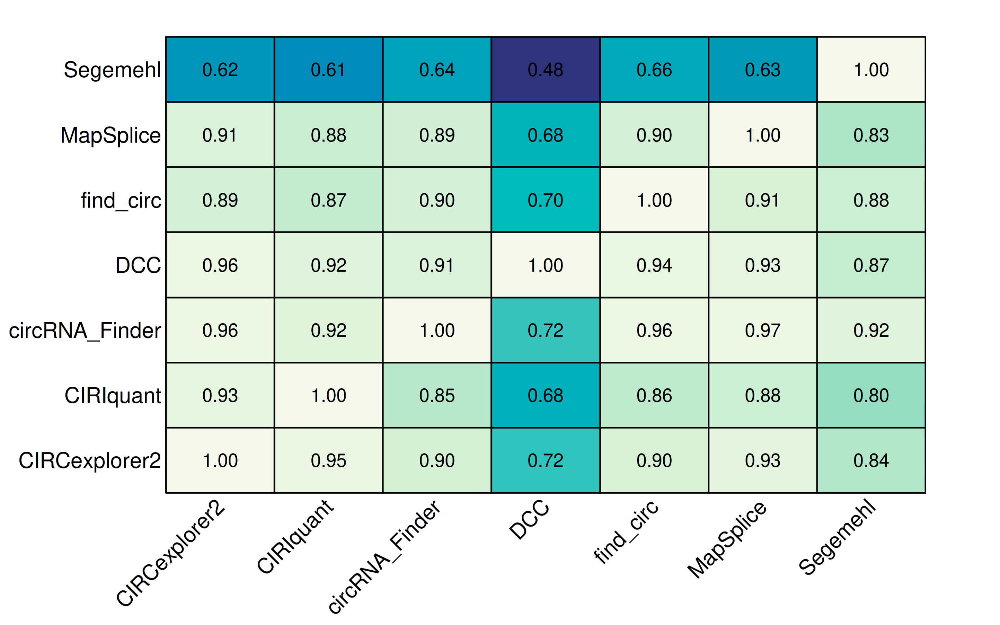
- CIRCexplorer2, CIRIquant, find_circ and MapSplice showed high mutual agreement and high precision.
- Segemehl recovered a low proportion of other tools’ candidates (conservative).
- DCC produced many candidates not covered by other tools, consistent with its 75.55% precision.
Supplementary · Chapter 4
One-to-many hg19–hg38 mapping retained by pycircdb
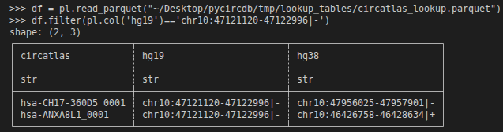
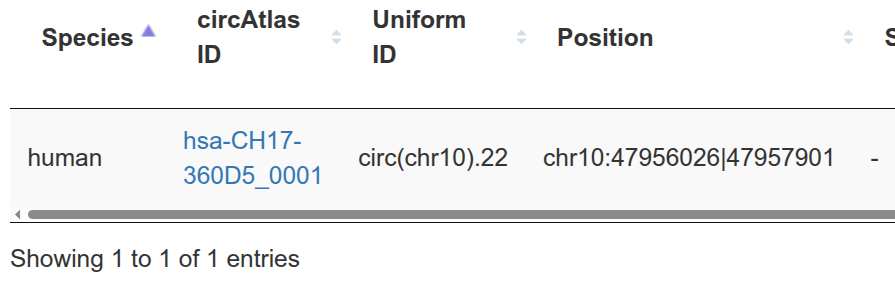
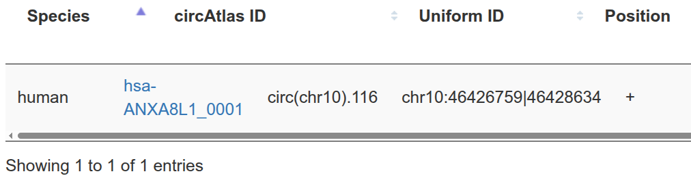
- Forward liftOver (hg19→hg38) returns a single coordinate.
- Reverse liftOver shows two hg38 coordinates mapping to the same hg19 locus, reflecting a segmental duplication present in hg38 but collapsed in hg19.
- pycircdb runs the reverse liftOver from each hg38-native entry and retains both mappings.
Supplementary · Chapter 4
Pairwise circRNA overlap between pycircdb lookup tables (hg38)
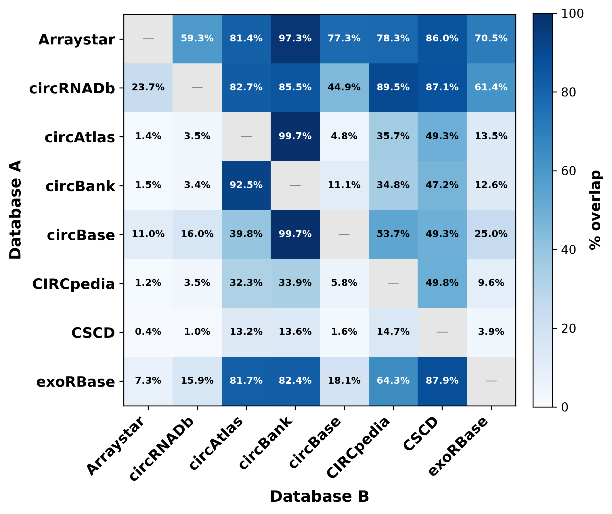
- circBank contains 99.7% of circBase (Jaccard 11.1%); circAtlas and circBank overlap almost completely (Jaccard 92.2%).
- CIRCpedia and CSCD overlap by 423,292 circRNAs (Jaccard 12.8%).
- Most other pairs have Jaccard indices below 25%: no single database is comprehensive.
Supplementary · Chapter 5
Survival cohorts used for model development and external validation
| Cohort | Series | BCR events / total |
|---|---|---|
| Belfast | GSE116918 | 56 / 248 |
| CIT | GSE54460 | 13 / 77 |
| CMap | GSE94767 | 58 / 200 |
| CPC | GSE107299 | 36 / 99 |
| DKFZ | EGAS00001002923 | 24 / 105 |
| GSE54460 | GSE54460 | 40 / 91 |
| Stockholm | GSE70769 | 45 / 92 |
| TCGA | TCGA-PRAD | 99 / 463 |
| Taylor | GSE21034 | 27 / 131 |
| GSE46602 (validation) | GSE46602 | 14 / 36 |
Sample sizes are reported after removing patients with missing BCR information. Expression data from PCaDB (log2 CPM), centred and scaled; duplicate gene identifiers collapsed to the highest-variance entry.
Supplementary · Chapter 5
Calibration of the prognostic model in the derivation dataset
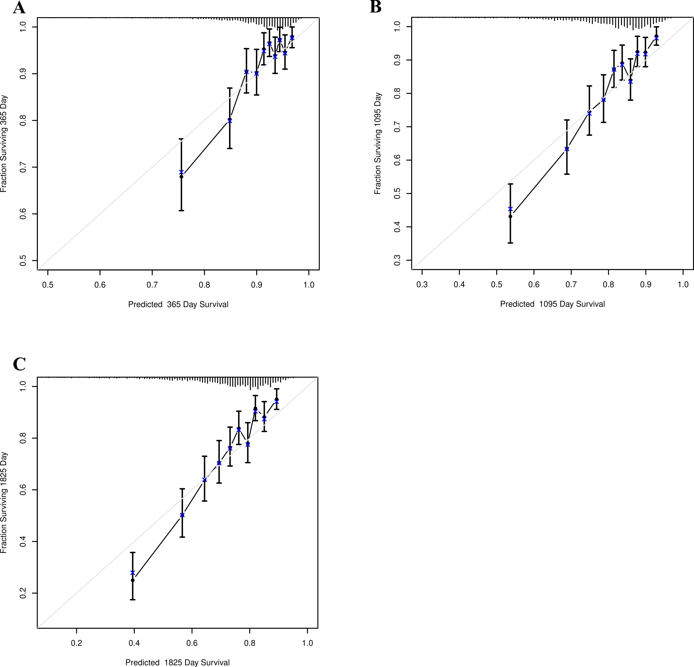
- Curves lie below the identity line at low predicted probabilities (overestimation of absolute risk) and cross above it at higher probabilities (underestimation).
- The model therefore ranks patients (discrimination) better than it estimates absolute risk; recalibration would be required before any absolute-risk use.
Supplementary · Chapter 5
Differentially expressed RNAs per contrast
| Type | Series | Contrast | Up | Down |
|---|---|---|---|---|
| circRNA | GSE113153 | Gleason high vs low | 2,608 | 1,979 |
| circRNA | GSE118959 | Clone 1 vs control | 591 | 729 |
| circRNA | GSE118959 | Clone 9 vs control | 20 | 74 |
| miRNA | GSE21036 | Tumour vs normal | 153 | 145 |
| miRNA | GSE23022 | Tumour vs normal | 17 | 8 |
| miRNA | GSE36803 | Tumour vs normal | 36 | 92 |
| miRNA | GSE45604 | Tumour vs normal | 22 | 67 |
| miRNA | GSE46738 | Tumour vs normal | 68 | 68 |
| miRNA | GSE312115 | Clone 1 vs control | 146 | 110 |
| miRNA | GSE312115 | Clone 9 vs control | 4 | 1 |
| miRNA | TCGA-PRAD | Tumour vs normal | 130 | 128 |
| Type | Series | Contrast | Up | Down |
|---|---|---|---|---|
| mRNA | GSE143408 | ENZ 7 d vs 0 d | 3,829 | 3,458 |
| mRNA | GSE143408 | ENZ 14 d vs 0 d | 5,693 | 4,792 |
| mRNA | GSE143408 | ENZ 21 d vs 0 d | 6,128 | 4,977 |
| mRNA | GSE78201 | ENZ 6 months vs control | 518 | 571 |
| mRNA | GSE88752 | ENZ-resistant vs sensitive | 3,564 | 2,942 |
| mRNA | LNCaP | Clone 1 vs control | 4,686 | 4,379 |
| mRNA | LNCaP | Clone 9 vs control | 1,420 | 1,303 |
| mRNA | TCGA-PRAD | Tumour vs normal | 3,860 | 4,506 |
| Unique overlapping circRNA / miRNA / mRNA | 168 / 16 / 691 | 64 / 26 / 619 | ||
ENZ: enzalutamide.
Supplementary · Chapter 1
Established molecular prognostic assays are predominantly mRNA-based
| Assay | Analytes | Reported performance |
|---|---|---|
| PHI | Total PSA, %free PSA, [−2]proPSA | AUC 0.74, versus 0.56 for total PSA (Stephan et al., 2013) |
| SelectMDx | DLX1, HOXC6 mRNA with clinical risk factors | Reduces overdiagnosis and overtreatment at PSA > 3 ng/mL (Dijkstra et al., 2017) |
| Oncotype DX GPS | 12 cancer-related and 5 reference genes | Score 0–100; prognostic for adverse pathology (Klein et al., 2014) |
| Prolaris | 31 cell-cycle progression genes | HR 1.77 per unit for BCR (95% CI 1.40–2.22; Cuzick et al., 2011) |
| Decipher | 22 genes | AUC 0.78 (BCR) and 0.80 (metastasis) in 139 patients after radical prostatectomy (Den et al., 2014) |
Supplementary · Chapter 2
Library preparation and technical artefacts shape circRNA detection
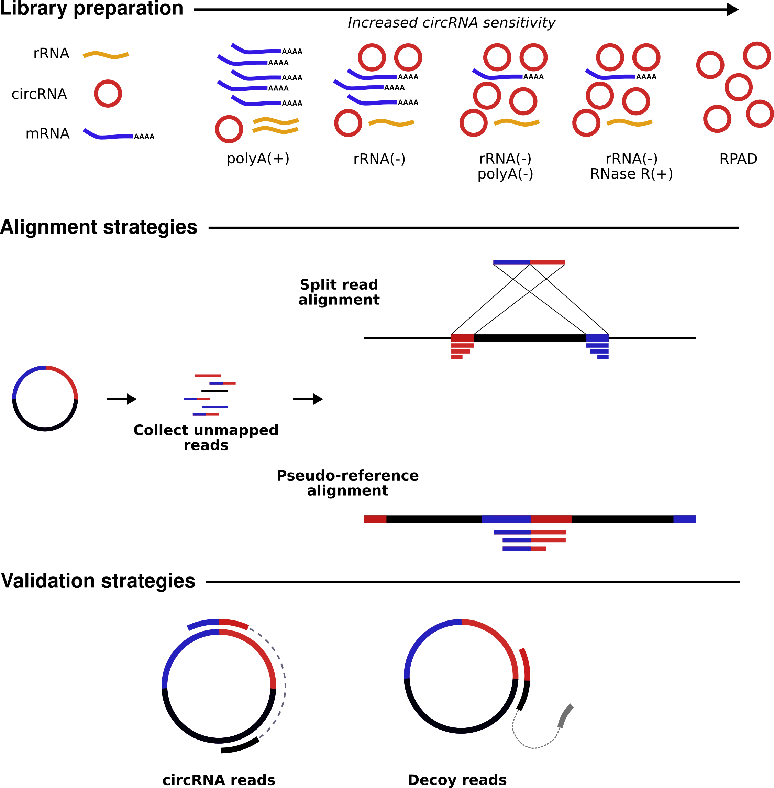
- circRNAs represent approximately 1% of the transcriptome relative to poly(A) RNA. Poly(A) selection removes them; rRNA depletion retains them; RNase R enriches them.
- RPAD (RNase R, polyadenylation, poly(A)+ depletion) yielded the most circRNAs and the highest sensitivity in a benchmark.
- Artefacts generating false back-splice junctions include reverse-transcriptase template switching (35–55% of computationally detected isoforms for a gene), adapter-ligation chimeras and base-calling errors near splice sites.
- Because circRNA abundance is low, read-depth filters do not remove artefacts; paired-end evidence is required, with the mate mapping within the same transcript.
Supplementary · Chapter 2
Back-splice junction detection: segmented-read and pseudo-reference strategies
| Segmented-read | Pseudo-reference | |
|---|---|---|
| Principle | Reads that do not align contiguously are split into anchors (e.g. 20 nt) and re-mapped; reverse-orientation anchors define the junction. | Reads are mapped to a database of candidate junctions, built from annotated exon–exon combinations or from tandemly duplicated candidates. |
| Examples | find_circ, UROBORUS | KNIFE, PTESfinder, CIRIquant, Sailfish-cir |
| Strengths | De novo discovery; suitable for incompletely annotated genomes | Fewer false positives; higher validation rates reported (Vromman et al., 2023) |
| Limitations | Lower sensitivity; relies on post hoc filters (flanking GU/AG, mismatches, mate position) | Annotation-constrained; the first variant detects only circRNAs sharing splice sites with linear transcripts |
Aligner-integrated chimeric detection (STAR or BWA output parsed by CIRCexplorer2, circRNA_finder, DCC and CIRI2) and splice-aware aligners (Segemehl, MapSplice) blend both approaches.
Supplementary · Chapter 2
Integration-based identification and resolution of circRNA internal structure
Consensus across tools
- Combine tools that use different aligners to avoid shared biases (Hansen et al., 2018).
- CirComPara2 default: seven methods, circRNAs called by ≥ 2.
- Pseudo-reference plus segmented-read tools increased detected circRNAs by a median of 61.1%, versus 35.4% for tools sharing a strategy; combining tools with canonical versus non-canonical splice-site settings gave 76.2% versus 32.6% (Vromman et al., 2023).
- Consensus is not sufficient: 9.9% of circRNAs called by ≥ 2 tools failed at least one validation method.
Internal structure
- BSJ reads do not resolve internal exon composition; CIRI-AS, CIRI-full and FUCHS reconstruct isoforms from paired-end coverage.
- Long-read methods (isoCirc, CIRI-long, circFL-seq) sequence full-length circRNAs following rolling-circle amplification or reverse transcription.
- isoCirc was the most sensitive (79,312 vs 34,046 known BSJ sites for circFL-seq in deep libraries); circFL-seq exceeded CIRI-long in HEK293 cells (27,869 vs 15,242).
Supplementary · Chapter 2
ceRNA networks depend on circRNA annotation, and the circRNA databases that supply it are heterogeneous

- Network edges rely on circRNA annotation: circRNA–miRNA pairs are taken from databases or predicted from the mature spliced sequence (miRanda, TargetScan).
- Twenty-four circRNA databases were catalogued; they differ in pipeline, genome assembly, coordinate convention and identifier scheme, and several were inaccessible.
- The same circRNA can therefore carry different identifiers and coordinates across resources, and cannot be cross-referenced reproducibly. This motivates Chapter 4.
Supplementary · Chapter 3
Existing circRNA workflows address subsets of the analytical process
| Workflow | Year | Quantification | miRNA prediction | Differential expression |
|---|---|---|---|---|
| CirComPara | 2017 | ✓ | ✗ | linear RNA |
| CirComPara2 | 2021 | ✓ | ✗ | ✗ |
| circtools | 2019 | ✓ | ✗ | ✓ |
| circRNAwrap | 2019 | ✓ | ✗ | ✓ |
| circRNAprofiler | 2020 | ✗ | ✓ | ✓ |
| circMeta | 2020 | ✗ | ✗ | ✓ |
| DEBKS | 2021 | ✗ | ✗ | ✓ |
| FcircSEC | 2020 | ✗ | ✗ | ✗ |
| Ularcirc | 2019 | ✗ | ✓ | ✗ |
| nf-core/circrna | 2023 | ✓ | ✓ | ✓ |
Aim
To provide a single, portable workflow performing circRNA quantification, miRNA target prediction and differential expression analysis from raw sequencing reads.
Most existing workflows are downstream toolkits requiring user-supplied quantification, or quantification workflows without downstream analysis.
Supplementary · Chapter 3
circRNA discovery: multi-tool quantification, consensus filtering and annotation
| Tool | Detection basis |
|---|---|
| CIRCexplorer2, circRNA_finder, DCC | STAR chimeric alignments |
| CIRIquant | BWA, CIRI2; pseudo-reference quantification |
| find_circ | Bowtie2 anchor re-mapping |
| MapSplice, Segemehl | Splice-aware alignment |
Annotation script (reference-guided): exonic circRNA, exon–intron circRNA (one boundary > 200 bp from an exon), intronic ciRNA, or intergenic. Outputs: extended BED12, mature spliced FASTA, count matrix.
| Parameter | Function |
|---|---|
--tool | Select one or more quantification tools |
--tool_filter n | Retain circRNAs called by ≥ n tools |
--bsj_filter | Minimum BSJ reads per tool |
--duplicates_fun | Aggregate counts across tools (maximum or mean) |
--exon_boundary | Tolerance for exon-boundary matching (default 200 bp) |
Supplementary · Chapter 3
miRNA target prediction and differential expression modules
miRNA target prediction
- miRNA response elements are identified in the mature spliced sequence, including the BSJ, using miRanda and TargetScan.
- A miRNA is retained only if predicted by both algorithms.
- Output per sample: circRNA–miRNA edges with miRanda score, minimum free energy and site type (6mer, 7mer-m8, 7mer-A1, 8mer).
- Suggested post hoc filter: exclude 6mers and sites with free energy ≥ −20 kcal/mol.
Differential expression
- Linear RNAs are quantified (HISAT2, StringTie) to obtain host-gene expression and library size factors for normalisation.
- DESeq2 for all contrasts of a condition column, adjusting for covariates; PCA and hierarchical clustering for quality control.
- CircTest (beta-binomial model) tests circRNA relative to host-gene expression.
- Not suitable for libraries from which linear RNAs have been removed.
Supplementary · Chapter 3
Workflow outputs and computational cost on the demonstration dataset
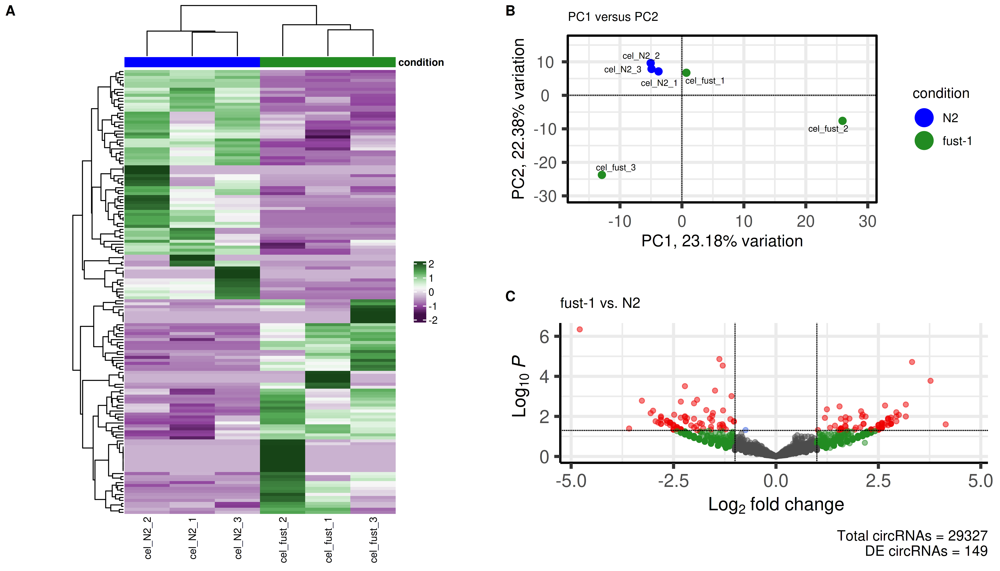
| Resource | Value |
|---|---|
| Wall-clock time | 18 h 21 min |
| CPU hours | 1,566 |
| Allocation (SLURM) | 8 CPUs, 60 GB |
| Peak process memory | ~38 GB |
Memory peaks were the find_circ and CIRIquant alignment steps; all other processes used < 10 GB. Per-process detail is in the supplementary slides.
Supplementary · Chapter 3
Evaluation of quantification tools: simulation design and performance metrics
Simulated dataset
- CIRIsimulator (modified; Zeng et al., 2017) accepting circBase-format coordinates.
- 7,445 glioblastoma circRNAs from circRNADb; 7,267 simulated.
- 1,450,328 paired-end reads, 101 bp, insert size 350 bp.
- Each call required ≥ 2 BSJ reads. Calls not among the 7,267 simulated circRNAs were counted as false positives.
Metrics
Precision = TP / (TP + FP)
Sensitivity = TP / (TP + FN)
F1 = 2 · Precision · Sensitivity / (Precision + Sensitivity)
There are no true negatives: quantification returns a set of circRNAs from reads and no universe of negatives is defined, so specificity and ROC-based measures are not applicable.
Supplementary · Chapter 3
Chapter 3: summary and limitations
Findings
- A single workflow performs quantification (up to seven tools), miRNA target prediction and differential expression analysis.
- On simulated data, calls shared by ≥ 2 tools reached 99.83% precision and 96.12% sensitivity.
- Three tools with
--tool_filter 2approximate the optimum; DCC degrades performance. - The demonstration recovered 4,435 published circRNAs in a single execution.
Limitations
- Guidance derives from one simulated human dataset with a computationally predicted truth set; RT and RNase R artefacts are not modelled.
- The miRNA and differential expression modules are not independently benchmarked.
- Annotation requires a reference GTF; the 200 bp exon-boundary default was not optimised.
- The 2,420 additional circRNAs are unvalidated.
Supplementary · Chapter 4
Heterogeneity among public circRNA databases limits reproducible annotation
| Resource | miRNA | RBP | API | Batch | Multi-species |
|---|---|---|---|---|---|
| circAtlas | ✓ | ✓ | ✗ | ✗ | ✓ |
| circBase | ✗ | ✗ | ✗ | ✓ | ✓ |
| circBank | ✓ | ✗ | ✗ | ✗ | ✓ |
| CircNet | ✓ | ✓ | ✗ | ✗ | ✗ |
| CIRCpedia | ✗ | ✗ | ✗ | ✓ | ✓ |
| CSCD | ✓ | ✓ | ✗ | ✗ | ✗ |
| starBase | ✓ | ✓ | ✓ | ✓ | ✓ |
| pycircdb | ✓ | ✓ | ✓ | ✓ | ✗ |
For pycircdb, API denotes the command-line interface.
Supplementary · Chapter 4
Nine databases integrated and their use in the annotation modules
| Database | Assembly | Coord. | Entries | Annot. | FASTA | miRNA | RBP |
|---|---|---|---|---|---|---|---|
| Arraystar | hg19 | 1 | 13,154 | ✓ | ✓ | ||
| circAtlas | hg38 | 1 | 768,986 | ✓ | |||
| circBank | hg19 | 1 | 828,802 | ✓ | ✓ | ||
| circBase | hg19 | 0 | 92,369 | ✓ | ✓ | ||
| CircNet | hg19 | 1 | 6,913,950 | ✓ | |||
| CIRCpedia | hg38 | 0 | 849,495 | ✓ | ✓ | ||
| circRNADb | hg19 | 1 | 32,942 | ✓ | ✓ | ||
| CSCD | hg38 | 1 | 2,749,897 | ✓ | ✓ | ✓ | ✓ |
| exoRBase | hg38 | 1 | 126,816 | ✓ |
Exclusions
- CircInteractome: substantial overlap with circBase.
- CircFunBase: 3,799 human records.
- MiOncoCirc, NeuroCirc: sample-level membership only.
- Several databases inaccessible.
Database files are versioned independently of the package; earlier snapshots are retained.
Coord. = native coordinate base. CircNet entries are circRNA–miRNA interactions.
Supplementary · Chapter 4
Coordinate normalisation and cross-mapping between genome assemblies
- All coordinates converted to a common 0-based representation.
- hg19↔hg38 cross-mapping with UCSC liftOver (default settings; both chain files); every circRNA stored with both coordinates.
- One-to-many mappings, arising in segmentally duplicated and repeat-rich regions, are retained rather than collapsed.
- CSCD redundancy removed: 1-based CIRI-only entries and antisense circRNA_finder entries, justified by strand-specific circBase identifiers.
- FASTA sequences are retained in the source assembly, which is encoded in the file name.
| Database | Total | hg19-only | hg38-only | Multi-mapped |
|---|---|---|---|---|
| Arraystar | 13,154 | 12 | 0 | 0 |
| circRNADb | 32,914 | 38 | 0 | 11 |
| circAtlas | 768,986 | 0 | 1,311 | 21 |
| circBank | 828,802 | 478 | 0 | 35 |
| circBase | 92,369 | 258 | 0 | 32 |
| CIRCpedia | 849,495 | 0 | 1,928 | 337 |
| CSCD | 2,749,897 | 0 | 3,863 | 129 |
| exoRBase | 126,816 | 0 | 378 | 78 |
Supplementary · Chapter 4
Software design: Apache Hamilton workflow and partitioned Parquet storage
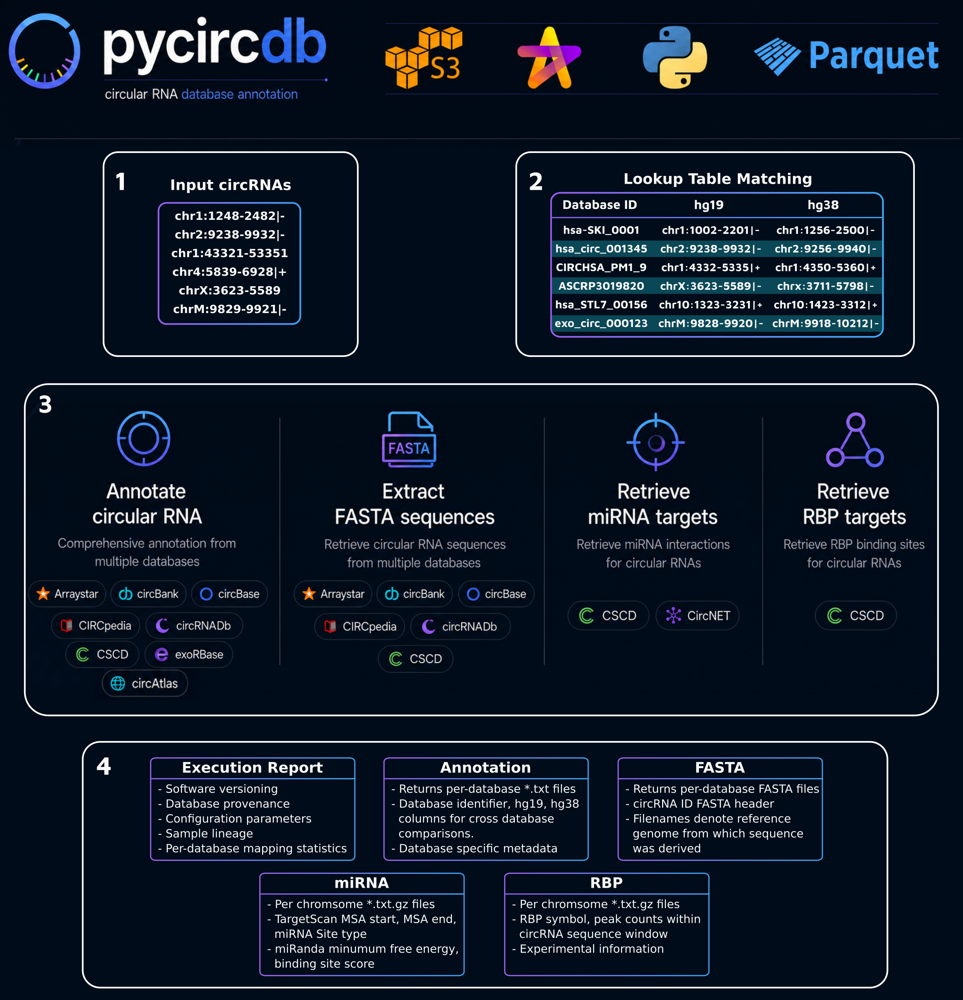
- Python command-line interface configured with a JSON file (global and per-sample parameters; reference build hg19 or hg38).
- Functions are arranged as a directed acyclic graph with Apache Hamilton, permitting configuration-driven parallel execution.
- Tables are stored as Parquet on AWS S3 (3.6 GB in total); only the requested databases and, for miRNA and RBP tables, the chromosomes present in the input are downloaded.
- Commands:
init-demo,annotate,fasta,mirna(miRanda, PITA, TargetScan) andrbp. - Continuous integration on Ubuntu, macOS and Windows with Python 3.10–3.14.
Supplementary · Chapter 4
Outputs, limitations and scope of pycircdb
Outputs
- Execution report: software and database versions, configuration, database provenance, per-database mapping statistics including multi-mappers.
- Annotation tables per database (identifier, hg19 and hg38 coordinates, host gene, biotype, transcript where available).
- FASTA sequences from six databases.
- miRNA interactions: 184,125,383 circRNA–miRNA pairs (CSCD, CircNet; miRanda, PITA, TargetScan).
- RBP interactions from CSCD (106,438,146 entries).
Limitations
- Human only (hg19, hg38).
- Dependent on the accuracy, curation and continued availability of source databases.
- A small fraction of coordinates in complex regions fails liftOver.
- Sequences are as provided by the sources and are not regenerated from input coordinates.
The nomenclature proposed by Chen et al. (2023) can be adopted by mapping existing identifiers through pycircdb.
Supplementary · Chapter 5
Internal–external cross-validation across the nine derivation cohorts
- Each cohort held out in turn; coefficients fixed from the remaining cohorts, without recalibration.
- Calibration slope: pooled 1.61 (1.35–1.86); range 1.19 (CMap) to 2.28 (Belfast); I2 = 43.3%, τ2 = 0.065, P = 0.079 (moderate heterogeneity).
- Harrell’s C: range 0.68–0.84; pooled 0.74 (0.69–0.79); I2 = 0%, P = 0.89, with wide per-cohort intervals.
- Gene-level random-slope variance (mixed-effects Cox): low for 18 of 23 genes; elevated for PHYHD1, LIX1, MTERF4 and SPARC.
- A full mixed-effects model with random slopes did not converge.
Supplementary · Chapter 5
Chapter 5: summary and limitations
Findings
- ceRNA network of 124 circRNAs, 38 miRNAs and 817 mRNAs shared between PCa and enzalutamide resistance.
- 23-gene signature: apparent C 0.73; optimism-corrected 0.68; pooled internal–external 0.74; external 0.71 (5-year AUC 0.87).
- Largely distinct from published signatures (2 of 23 genes shared).
Limitations
- Clinical covariates limited to PSA and Gleason score.
- Alternative selection methods (glmnet, random survival forests) did not yield suitable predictor-set sizes; no comparison made.
- Moderate heterogeneity in calibration; mixed-effects random-slope model did not converge.
- Small external cohort; retrospective data; calibration curves deviate from identity.
- 2D LNCaP models; no functional validation of circRNA mechanisms.
Supplementary · Chapter 6
Contributions to knowledge
- Evidence-based defaults for multi-tool circRNA quantification (combinatorial evaluation of seven tools) and a portable, containerised implementation.
- A versioned, coordinate-harmonised resource and command-line interface for annotating circRNAs across nine databases.
- A knowledge-based (ceRNA) feature selection framework for prognostic modelling, evaluated with optimism correction, internal–external cross-validation, external validation and comparison with published signatures.
Software: nf-core/circrna (nf-co.re/circrna), pycircdb (PyPI, GPL-3.0), analysis code at github.com/BarryDigby/pca_network.
Supplementary · Chapter 6
Methodological and biological limitations
Computational
- Short-read BSJ methods do not resolve internal exon composition; miRNA response elements predicted from reference-guided sequences may be overestimated.
- pycircdb depends on source database accuracy and availability; human only.
- A small fraction of coordinates fails liftOver.
Modelling
- Clinical metadata inconsistent across public cohorts; adjustment limited to PSA and Gleason score.
- Between-study heterogeneity in calibration (I2 = 43.3%).
- Small external validation cohort; retrospective design.
Biological
- 2D monoculture LNCaP models omit stromal, immune and hypoxic context and lineage plasticity.
- Causal roles of network members were not tested experimentally.
Supplementary · Chapter 6
Conclusions
- circRNA detection and annotation from short-read data are method-dependent; consensus-based, containerised workflows and harmonised annotation improve reproducibility.
- nf-core/circrna and pycircdb provide portable infrastructure for quantification, miRNA target prediction, differential expression and multi-database annotation.
- A ceRNA network shared between prostate cancer and enzalutamide resistance was used as a biological prior to constrain feature selection, yielding a 23-gene signature associated with five-year biochemical recurrence (optimism-corrected C-index 0.68; external C-index 0.71) with between-cohort heterogeneity in calibration. Whether the network regulates enzalutamide resistance was not tested and requires functional and prospective validation.
Thank you. Questions are welcome.
Supplementary · Chapter 2